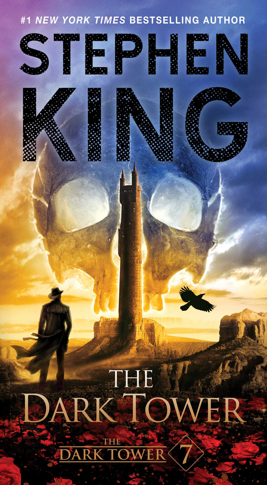
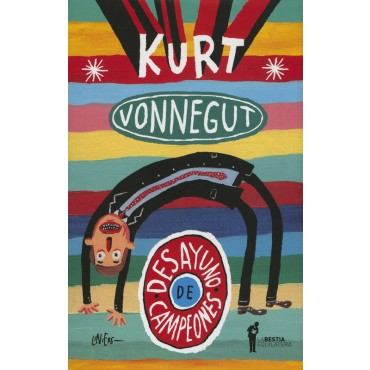
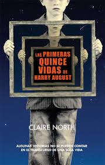
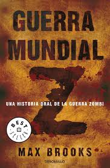
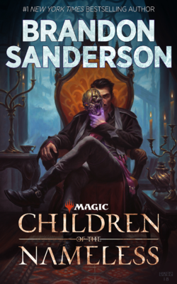

La Torre Oscura
Conclusión de la odisea de Roland y sus compañeros en defensa de la Torre Oscura, ahora que ya ha nacido Mordred, cuya única obsesión es destruir a Roland y malograr sus misión redentora de preservar la Torre que sustenta nuestro mundo. Sólo quedan tres personajes para culminar el objetivo. cuando Roland acce a la torre envuelta en rosales, ascenderá a través de sus propios recuerdos: los peligros siguen acechándolo, pero él ya está en posesión de las respuestras adecuadas.
El Heroe de las Eras

La conclusion de la primera trilogia "Nacidos de la Bruma". Cuando el mundo se acaba, Vin y Elend deben encontrar la forma de acabar con un mal desconocido.
Desayuno de Campeones
Desayuno de campeones es la novela más personal, satírica y disparatada del incomparable Kurt Vonnegut. Una suerte de historia abreviada del siglo XX estadounidense en particular y de la humanidad en general, contada (e ilustrada) para niños o extraterrestres por un loco, que bien podría ser el Creador del Universo. La publicó originalmente en 1973, cuando ya era un escritor consagrado, y narra en un juego de cajas chinas el encuentro entre un grupo de personajes tan estrafalarios como entrañables con el escritor que los inventó.
Las Primeras Quince Vidas de Harry August
Cada vez que Harry muere, vuelve a nacer justo en el mismo lugar y la misma fecha, como un niño con todo el conocimiento de una vida que ha vivido ya doce veces antes. No importa lo que haga o las decisiones que tome, al morir Harry siempre vuelve a donde todo comenzó. Hasta ahora. Mientras Harry se acerca al fin de su undécima vida, una niña pequeña se acerca al borde de su cama. «Casi le echo de menos, doctor August», dice. «Necesito enviar al pasado un mensaje con usted. Ha ido pasando de niño a adulto, de niño a adulto, mil años hacia atrás en el tiempo. El mensaje es que el mundo se acaba, y no podemos prevenirlo. Ahora es su turno». Esta es la historia de lo que Harry August hace a continuación (y lo que hizo antes). De cómo trata de salvar un pasado que no puede cambiar y un futuro que no puede permitir. Esta es una historia de amistad y traición, de amor y soledad, de lealtad y redención y del inevitable paso del tiempo.
Guerra Mundial Z
Max Brooks ha dedicado varios aos a recorrer el mundo en busca de todos los testimonios que ahora rene aqu sobre la guerra mundial zombi. Por inslito que parezca este libro, que algunos tildan de novela demasiado realista, es la parte censurada del informe que le encarg Naciones Unidas para que quedara memoria de "La Crisis", los "Aos Oscuros" o la "Plaga Andante", principalmente conocida como Guerra Mundial Z. Al parecer haba "demasiado factor humano".
Children of the Nameless
Desde el día que nació, Tacenda ha sido bendecida y maldita a la vez. Cuando su hechizo protecto falla en la noche y su pueblo Kessig es atacado, buscará venganza contra quien cree responsable, Lord of the Manor.